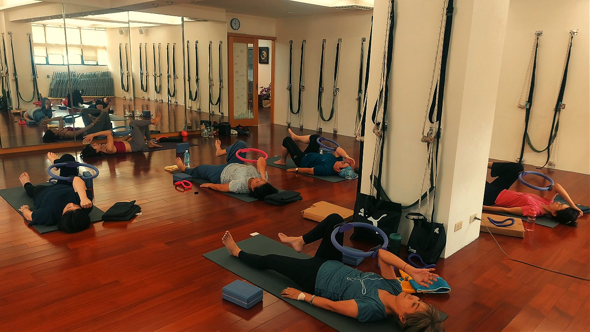

每坐 40 分鐘，站起來做這一件事

- 久坐數小時累積的組織傷害無法靠下班單次拉筋抵消，結締組織與血管微循環怕的是「長時間靜態不動」。
- 久坐超過 40 分鐘會誘發椎間盤內壓暴增 150%–200%、胸腰筋膜蠕變延展，以及髖屈肌縮短與臀肌失憶症。
- 站姿 30 秒微動作的核心是：步態後退伸髖、肩胛下壓開胸、橫膈膜長吐氣軸向拔高，立即重置神經代償。
- 若起身時出現腰背電擊刺痛下肢放射、垂足或會陰部麻木，嚴禁自行拉筋，應立即就診神經外科或骨科。
多數上班族都有類似的日常經驗：埋首於螢幕與專案中，回過神來才發現自己已經連續坐了三、四個小時。此時往往伴隨肩膀沉重如負千斤、下背緊繃發酸、雙腿發脹發沉。多數人習慣安慰自己「等下班再去健身房或回家好好拉筋還債」。然而，人體生理學與力學適應並非數學加減法——身體真正承受不可逆負擔的，往往不是運動量不足，而是結締組織與深層神經在「長時間靜態固定」中所發生的塑性形變。
組織生物力學：為什麼久坐 40 分鐘是身體的臨界分水嶺？
當人體維持在靜態坐姿超過 30 至 40 分鐘時，脊柱與周邊軟組織會陸續觸發一系列代償與病理適應連鎖反應：
- 椎間盤軸向壓縮載荷暴增（Axial Compression）：人體在標準站姿時，第三、四腰椎間盤所承受之壓力約為基準值 100%；但當坐進辦公椅且伴隨輕微駝背時，由於骨盆後傾失去腿部避震支持，腰椎間盤承壓瞬間飆升至 150%–200%，促使中央髓核持續向後方纖維環薄弱處擠壓。
- 結締組織蠕變效應（Tissue Creep & Viscoelasticity）：人體韌帶與胸腰筋膜具備黏彈性。當持續處於屈曲拉長狀態超過 30 分鐘，後縱韌帶與棘上韌帶會發生微觀長度延展，即所謂的「蠕變現象」。此時大腦對脊椎微幅位移的本體感覺感知（Proprioceptive Awareness）會迅速鈍化，深層多裂肌陷入「感覺失憶」，站立瞬間極易引發急性小面關節嵌頓或閃腰。
- 髖屈肌死鎖與臀肌失憶症（Glute Amnesia）：髖關節全天候處於 90 度屈曲，腰大肌（Psoas Major）與股直肌持續短縮脫水；同時，臀大肌受到上半身體重長達數小時的物理壓迫與缺血抑制，其神經肌肉興奮性受到「交互抑制（Reciprocal Inhibition）」機轉壓制，久而久之大腦失去自主喚醒臀肌的能力，起身行走全靠腰椎後仰代償。
- 肌肉靜脈泵停擺（Muscle Pump Failure）：小腿比目魚肌與腓腸肌缺乏收縮擠壓，下肢靜脈血液與組織間淋巴回流速度驟降，代謝廢物堆積引發腿部酸脹與全身中樞神經沉重疲倦感。
肌肉真正恐懼的不是「偶爾出大力」，而是「長時間被卡在同一個縮短或被拉長的角度」。規律的微型中斷，其修復效益遠遠高於久坐累積後的劇烈拉筋。
打破代償鏈的「30 秒站姿微調法」：一次重置三個力學樞紐
中斷久坐的動作必須極度精準、門檻極低且無需任何器材，才能在辦公室工位隨時實踐。這套 30 秒複合站姿微調，專門針對久坐最受害的三大力學盲區進行立體重設：
- 步驟一：步態後退伸髖（Hip Extension Reset）——解除腰大肌死鎖
在座位旁站穩，雙腳原本平行，將單腳向後微退約半步（約 30 公分），腳尖朝向正前方扎根。保持骨盆水平與中立位，下腹部深層微收，主動微幅夾緊後側腳的臀大肌。此時能清晰感受到後腳大腿根部與鼠蹊前側被溫和拉開，立即釋放短縮的髂腰肌，左右各維持 5 秒。 - 步驟二：胸骨向上展開與肩胛下壓（Thoracic Opening）——反轉圓肩駝背
雙腳收回與肩同寬，雙手在身後十指互扣（若雙手無法碰觸可握住一條長形原子筆或拉住椅背兩側）。雙肘微屈，吸氣時將胸骨朝向天花板 45 度微幅展開，想像兩片肩胛骨向脊椎中線收攏並向下沉降。這能瞬間拉開短縮的胸大肌與胸小肌，同時喚醒失憶已久的下斜方肌與菱形肌。 - 步驟三：橫膈膜長吐氣與垂直軸向拔高（Axial Elongation）——椎間盤微減壓
維持胸腔開展與肩胛下沉，進行兩至三次深沉平穩的呼吸（鼻吸氣 4 秒、慢吐氣 6 秒）。在每一次緩慢吐氣時，專注感受頭頂百會穴向上延伸拔高，橫膈膜隨吐氣回彈上提，啟動深層腹橫肌與骨盆底肌，為遭受壓縮的腰椎間盤重新注入微負壓空間。
整套動作流暢完成僅需 30 秒，無需更換衣服，也不會引起同事注意，卻能在生理學上瞬間為脊椎注入新鮮血液與本體感覺刺激。
壁繩瑜伽如何將微型習慣深化為長效體態改善？
辦公室的 30 秒微動作，本質上是「止血防禦機制」，防止代償如雪球般越滾越大；而想要徹底重塑被久坐磨損的體態架構，則需要進入具備力學卸載的環境中深入修復：
在鑫彥瑜珈的壁繩課堂中，工業級登山壁繩提供 30%～70% 的自重物理分擔，能讓極度緊縮硬化的腰大肌在完全沒有下背代償壓迫的安全窗格中，進行長達數分鐘的平穩牽引；同時，牆面的剛性平面能幫助大腦重新校準骨盆兩側的旋轉偏差。想進一步了解壁繩如何幫助僵硬族群卸除重力，可參考第一次上壁繩瑜伽會做什麼？新手上課前先看這些與身體很硬、沒基礎，為什麼反而更適合壁繩。
醫療急症紅旗：何時嚴禁自行起身做拉筋動作？
如果久坐引起的身體訊號已超越了常規的肌肉酸沉疲勞，並伴隨以下任何神經壓迫徵象，切勿自行後仰、旋轉或硬拉，應立即前往骨科、復健科或神經外科專科就醫：
- 坐骨神經根放射電擊痛：從臀部深處、大腿後側如閃電般向下放射至小腿外側或腳趾，伴隨灼熱刺痛或針刺感。
- 下肢運動神經麻痺（垂足 Foot Drop）：行走時單腳腳尖無法自主勾起，腳掌容易拖地拖沓，上下樓梯極易絆倒。
- 馬尾症候群（Cauda Equina Syndrome）：會陰部或臀部內側出現「鞍區麻木不仁」，伴隨突發性排尿困難、尿瀦留或大小便失禁，此為脊髓神經急症。
- 急性小面關節卡死：起身或扭轉時腰部發出脆響，隨後下背部劇烈抽筋鎖死，身體完全無法直立或向前彎曲。
先看清楚自己到底哪裡代償卡住了
圓肩角度多少、骨盆有沒有前傾前移、左右側骨盆高低差幾度——AI 體態檢測會在教室現場，把你平常只能「感覺」到的久坐疲勞，轉化為客觀精確的 2D 骨骼力學數據。
預約首次 NT$299 AI 體態檢測本文為體態與姿勢的一般衛教與練習分享，非醫療診斷或治療。若有疼痛、舊傷或特殊病史，請先諮詢合格醫療專業人員。
常見問題
久坐一整天後，下班才做一次長時間的大伸展有用嗎？
效果非常有限。人體結締組織與血管微循環不是數學加減法。連續久坐數小時會引發胸腰筋膜塑性變形（蠕變現象）與深層姿勢肌失憶，累積的關節剪切力與血液滯留無法靠單次十五分鐘拉筋逆轉；唯有規律在日常中切斷久坐慣性，才能真正防止組織退化。
為什麼每坐四十分鐘就必須站起來中斷一次？
在人體力學上，維持靜態坐姿超過三十分鐘至四十分鐘，腰椎間盤承受壓力高達站姿的百分之一百五十至兩百，後側韌帶開始發生微觀鬆弛，髖屈肌群持續縮短硬化並誘發臀肌失憶。每四十分鐘起身三十秒，能即時重新啟動下肢肌肉靜脈泵並重設大腦神經肌肉控制迴路。
這個三十秒站姿微動作的正確力學步驟是什麼？
站立於辦公桌旁，依序執行三步驟：第一步單腳向後微退半步微屈膝，腹部微收並微夾臀大肌以伸展髖屈肌；第二步雙手在背後互扣展開胸骨，肩胛骨向中下方收攏以喚醒菱形肌與下斜方肌；第三步配合兩至三次長吐氣橫膈膜呼吸，感受整條脊椎垂直向上延伸拔高。
站起來做伸展時，如果下背反而感到酸痛該怎麼辦？
這通常代表你在做開胸或伸髖動作時，誤用了「腰椎過度前凸（折腰）」來代償胸椎與髖關節的活動度受限。請立刻停止向後硬折，檢查下腹部核心是否微收維持骨盆中立位，並將專注力放在胸腔的向上抬升與大腿前側的微幅延展，而非向後下壓腰部。
這個日常微動作與實體壁繩瑜伽有什麼本質關聯？
三十秒微動作是將壁繩瑜伽的核心力學邏輯濃縮至辦公環境中。實體教室利用壁繩提供百分之三十至七十的自重卸載與剛性垂直對位，深層牽引緊縮的腰大肌並重新激活深層多裂肌；日常起身微調則是將這份空間記憶持續定錨在生活中，二者相輔相成。